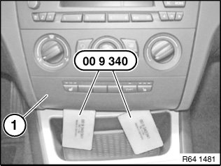
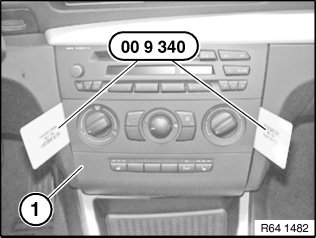
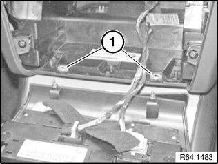
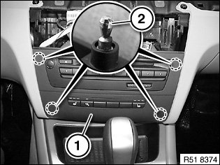
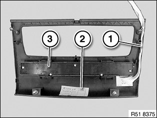

51 45 310 Removing and Installing (Replacing) Centre Trim For Instrument Panel
51 45 310 Removing and installing (replacing) centre trim for instrument panel
Special tools required:

IMPORTANT: Risk of damage.
A hard disk is installed in the Car Infotainment Computer (CIC).
Carry out mechanical work on the CIC and adjacent components with care.
Avoid subjecting the CIC to shaking/shocks.
IMPORTANT: Risk of damage.
When working on trim panel components, make sure that the sensitive surfaces are not scratched or damaged.
Version without CCC/ASK or CIC:

Unclip bottom trim (1) with special tool 00 9 340.

Unclip top trim (1) with special tool 00 9 340.
Pull out trim (1) and disconnect associated plug connection.
Replacement:
- Remove operator unit for heater/air conditioner
- If necessary, remove centre console switch cluster

Installation:
If necessary, replace faulty holders (1).
Version with CCC/ASK or CIC:

Remove control panel for heating and air conditioning system.
Pull trim cover (1) inward to release from pin (2).
Detach trim cover (1) and disconnect plug connection.

Installation:
Make sure ribbon cable (1) is positioned correctly on trim cover (2).
Replacement:
If necessary, modify centre console switch cluster (3)

Installation:
If necessary, replace faulty holders (1).